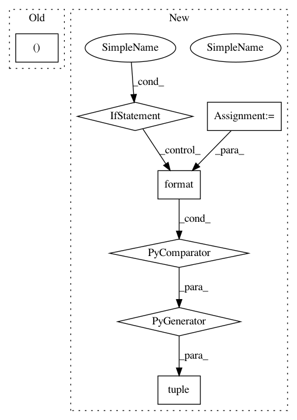

7856d22b09561e33522bdc0bd00218ae75b84bd7,examples/mujoco_all_sac.py,,run_experiment,#Any#,31
Before Change
qf1 = NNQFunction(
observation_shape=env.observation_space.shape,
action_shape=env.action_space.shape,
hidden_layer_sizes=(M, M),
name="qf1")
qf2 = NNQFunction(
observation_shape=env.observation_space.shape,
After Change
base_kwargs = dict(algorithm_params["base_kwargs"], sampler=sampler)
M = value_fn_params["layer_size"]
q_functions = tuple(
NNQFunction(
observation_shape=env.observation_space.shape,
action_shape=env.action_space.shape,
hidden_layer_sizes=(M, M),
name="qf{}".format(i))
for i in range(2)
)
vf = NNVFunction(
observation_shape=env.observation_space.shape,
hidden_layer_sizes=(M, M))
initial_exploration_policy = UniformPolicy(
In pattern: SUPERPATTERN
Frequency: 3
Non-data size: 7
Instances
Project Name: rail-berkeley/softlearning
Commit Name: 7856d22b09561e33522bdc0bd00218ae75b84bd7
Time: 2018-09-09
Author: kristian.hartikainen@gmail.com
File Name: examples/mujoco_all_sac.py
Class Name:
Method Name: run_experiment
Project Name: rail-berkeley/softlearning
Commit Name: 7856d22b09561e33522bdc0bd00218ae75b84bd7
Time: 2018-09-09
Author: kristian.hartikainen@gmail.com
File Name: examples/mujoco_all_ray.py
Class Name:
Method Name: run_experiment
Project Name: rail-berkeley/softlearning
Commit Name: 7856d22b09561e33522bdc0bd00218ae75b84bd7
Time: 2018-09-09
Author: kristian.hartikainen@gmail.com
File Name: softlearning/algorithms/sac.py
Class Name: SAC
Method Name: _init_critic_update